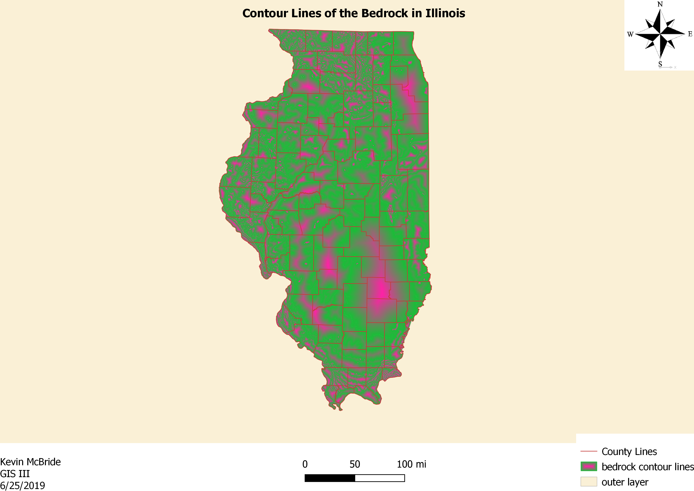
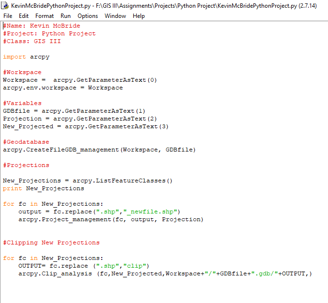

My career goals at this time are focused on hydrology and the factors in which that field surrounds. I have interest in dealing with water quality, watersheds, water conservation and the effects of erosion. I am looking to gather real world experiences that deal with hydrology. I also share an interest in geology in the perspective of mining or farming. Soil sampling is also something I am wanting to learn more about and have some field experience in. My ideal placement within the workforce would be in the field. I am interested working outdoors. However, research within a lab is just as important as field sampling and collection, so I will do what is required of me.
Training with explosive ordnances in learning how to identify and safely remove the hazards of the ordnances.
Operate an unmanned vehicle and conduct air reconnaissance, surveillance, targeting and acquisition missions. Deployed to Afghanistan from September 2012 to May 2013 with the 101st Airborne Division at Fort Campbell, KY.
GPA: 4.00
GPA: 3.78
Thermatic map of the distribute of white people in the United States and Chicago, Illinois
Contour lines of the Bedrock of the state of Illinois. This map shows use of starburst fill and inverted fill.
Python coding involving ARCGIS. This script's aim is to change the projections of shapefiles and to clip it to a new shapefile.